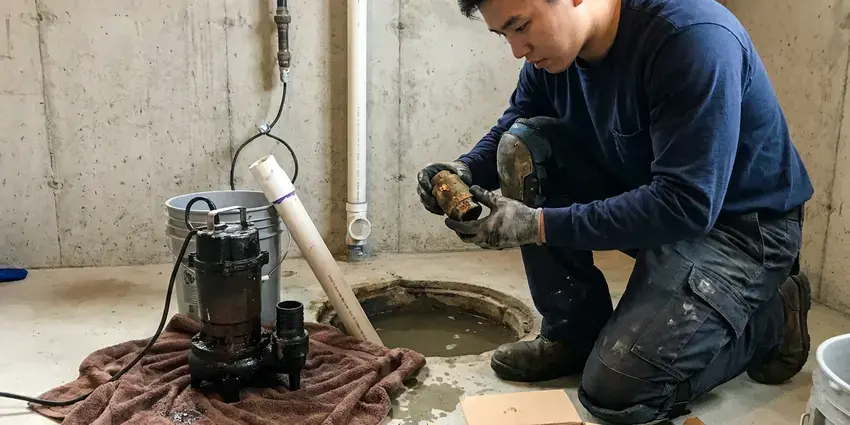

Well Pump Replacement in Mililani Town, HI
For dependable well pump replacement in Mililani Town, HI, trust the licensed plumbers at HKL Plumbing. We restore your water flow quickly.
- Licensed and Insured Plumbers
- Upfront Pricing
- Fast Well Pump Service
- Skilled Technicians

Need a Well Pump Replacement? Get a Free Quote in Mililani Town, HI.
We carry common pump sizes and controls, so most jobs finish in one day.
Your Go-To for Well Pump Replacement in Mililani Town, HI
HKL Plumbing diagnoses well problems thoroughly before replacing equipment. We test the pressure switch, control box, wiring and tank so we know the pump is the real cause.
Our expertise includes:
- Pressure Tank and Switch Integration
- System Diagnostics and Sizing
- Years of Hawaii Well System Experience

Additional Plumbing Replacement Services in Mililani Town, HI
When repairs are no longer enough, our replacement services in Mililani Town, HI deliver durable upgrades that restore full performance.




Mililani Town sump pump replacement specialists


Customers
Why Choose HKL Plumbing for Well Pump Replacement in Mililani Town, HI?
Hard water, sediment and falling water tables can all wear on well pumps. We consider these factors when choosing a replacement.
- Expert Installation, Our licensed plumbers have extensive experience with well systems, for a correct and durable installation every time.
- Energy Efficiency, We install modern, energy-efficient well pumps that can help lower your electricity bills over time.
- Quality Pumps, We install only reliable, high-efficiency well pumps designed to provide years of trouble-free service for your home.
Citywide Coverage
We replace well pumps for homes and ranches in and around Mililani Town, including properties far from paved roads. We bring equipment suited to deep wells and rough access.
Experienced Team
Our team is made up of highly trained and certified plumbers with extensive experience in well pump systems. They are experts in diagnosing pump issues and performing precise replacements, so your new pump runs the way it should.
Safety-First Approach
We follow Hawaii well and plumbing requirements and disinfect the well after pump replacement when needed. Proper sealing helps protect your water supply.
Trusted Certified Mililani Town Plumbing Services Professionals
At HKL Plumbing, we take pride in providing certified plumbing services throughout Mililani Town, HI. Backed by recognized industry credentials, our experienced plumbers combine technical skill with genuine customer care. Whether it is repair, installation, or maintenance, we follow strict safety and quality standards to deliver long-lasting results you can trust.
Call Us Now PHCC Plumbing Contractor Recognition
PHCC Plumbing Contractor Recognition Better Business Bureau (BBB) Accreditation
Better Business Bureau (BBB) Accreditation Angi Certified Pro
Angi Certified Pro ISO 9001 Quality Management Certification
ISO 9001 Quality Management CertificationReliable Well Pump Replacement Services in Mililani Town, HI
Agricultural and Ranch Well Pumps in Mililani Town
Larger properties may need higher-horsepower pumps for irrigation or livestock. We replace pumps sized for higher flow and deeper wells. Three-phase pumps may require specialized controls. We coordinate with your schedule to minimize downtime. We also check storage tanks and distribution lines.

Submersible Well Pump Replacement in Mililani Town
Submersible pumps are common for deeper wells, as they operate submerged within the well casing. When these heavy-duty pumps fail due to wear, electrical issues or sediment, replacement requires specialized tools and expertise. Our technicians safely retrieve the old pump, inspect the well and install a new, high-efficiency submersible unit. We confirm proper depth and electrical connections for homes in Mililani Town.
Constant Pressure Well Pump Installation in Mililani Town, HI
For homeowners wanting consistent water pressure regardless of demand, constant pressure well pump systems are an great upgrade. These systems use variable speed drives to match pump output to your usage, eliminating pressure swings. We specialize in installing these advanced systems, providing a more comfortable and efficient water experience in Mililani Town, HI.
Constant Pressure Pump Systems in Mililani Town
Constant pressure systems use a variable frequency drive to adjust pump speed and keep pressure steady. Grundfos SQE and Franklin SubDrive systems are common choices. They eliminate the pressure swings of traditional systems. They can also cut wear on the pump. We help you decide if the extra cost is worth paying.
Emergency Well Pump Services in Mililani Town
A well pump failure can leave you without water without warning. HKL Plumbing offers emergency well pump replacement services to restore your water supply as quickly as possible. Our technicians are equipped to respond to urgent calls in Mililani Town, diagnosing the problem and installing a new pump to minimize disruption to your home.
Solar Well Pump Systems in Mililani Town, HI
Remote properties and livestock wells often benefit from solar-powered pumps. Solar can be a sensible option wherever a site gets steady sun. We install solar pump systems with controllers and storage tanks. These systems lower energy costs and work off-grid. We size panels and pumps to your water needs.
Cost-Effective Well Pump Solutions in Mililani Town, HI
While well pump replacement is a significant investment, we strive to provide cost-effective solutions without cutting corners on quality. We offer transparent pricing and discuss pump options and their long-term benefits. That helps you make an informed decision that fits your budget and provides reliable water for years to come in Mililani Town, HI.

Emergency Well Pump Replacement in Mililani Town
A sudden well pump failure can leave you without water, creating an immediate emergency. HKL Plumbing offers emergency well pump replacement services to restore your water supply as quickly as possible. We understand the urgency, especially for rural homes around Mililani Town that rely only on well water. We put a priority on rapid response to get your system back online.
Well Pump Replacement Near Me in Mililani Town, HI
When you search for well pump replacement near me in Mililani Town, HI, HKL Plumbing is your dependable local choice. We have a strong presence in the community, and our technicians are often just a short drive away, ready to address your well pump issues quickly. Our local knowledge means we understand the challenges wells can face in the area.
Do not wait for your water supply to completely dry up. For fast and professional well pump replacement near me, contact HKL Plumbing. We are known for quick dispatch and efficient service to homes and businesses throughout Mililani Town, minimizing your downtime and restoring your comfort.
HKL Plumbing at a Glance
- Fully licensed plumbing team covering Mililani Town, HI
- Same-day appointments and 24/7 emergency response
- Clear written estimates, no hidden fees
- 4.8-star rated by 529+ Hawaii customers
Mililani Town Map
Mililani Town Information
- Population
- 28,121
- Area codes
- Local
- Service area
- Mililani Town and communities within 40 miles
- Nearby
- Mililani Mauka, Waipio, Royal Kunia, Wahiawa
For homes in Mililani Town, HI, a dependable well pump is essential, especially given local geology and water table changes that affect well performance and pump requirements.
Expert Services
Trust our professionals for reliable HKL Plumbing solutions in Mililani Town, HI.
Our Specialized Plumbing Services in Mililani Town, HI
At HKL Plumbing, we provide a complete range of plumbing services across Mililani Town, HI. From leak detection to full system installations, our team ensures fast, precise, and affordable service for both residential and commercial properties. Explore our core services below:


How Our Well Pump Replacement Process Works in Mililani Town, HI
We restore water quickly with careful diagnosis and professional installation.
Request a Quote
Contact us at (808) 649-6718 to schedule an appointment. We will gather basic information about your well system and the issues you are experiencing.
On-Site Diagnosis
Our licensed plumber will visit your Mililani Town property to accurately diagnose the well pump problem. We will inspect the pump, pressure tank and electrical components to confirm the need for replacement.
Pump Selection
Based on your well's depth, water usage and budget, we will recommend the right well pump for your needs. We will provide a clear, upfront estimate for the whole replacement.
Frequently Asked Questions About Well Pump Replacement in Mililani Town
Well pump replacement usually costs $1,800 to $4,500 depending on well depth and pump size. Deep wells or constant pressure systems can cost $4,000 to $8,000.
New well pumps typically come with a manufacturer's warranty, usually ranging from 1 to 5 years, covering defects in materials and workmanship. HKL Plumbing also backs our installation work with our own labor warranty. We will discuss warranty details for your chosen pump during the quoting process.
Shallow well pumps, or jet pumps, are designed for wells where the water level is usually 25 feet or less from the pump, using suction to draw water. Deep well pumps, or submersible pumps, are placed directly in the water near the bottom of the well and push water up, suited for depths over 25 feet. Choosing the correct type is critical for efficiency and performance.
Most standard well pump replacements can be completed within a single day, typically 4 to 8 hours. However, complex installations involving very deep wells, difficult access or additional system repairs may take longer. Our team works quickly to restore your water as soon as possible.
Regular maintenance, such as checking your well's water level, keeping the pressure tank air charge correct and fixing any leaks promptly, can extend your pump's life. Avoiding heavy water use and installing a good quality sediment filter can also reduce wear and tear on the pump.
HKL Plumbing installs and services a wide range of reputable well pump brands known for their durability and performance. These commonly include Grundfos, Franklin Electric, Goulds Pumps and Sta-Rite. We can recommend the best brand and model to suit your well's requirements.
Manufacturer warranties typically range from 1 to 5 years. We also provide a labor warranty.
In many areas, permits may be required for significant plumbing work like well pump replacement, especially if it involves changing the well system's electrical or structural components. HKL Plumbing will help you navigate any permitting in Mililani Town, HI so your installation is fully compliant with local regulations.
What People Are Saying About Our Plumbing Experts?

Mark T.
When our office needed drain cleaning, HKL Plumbing provided quick, reliable service. The plumber arrived on time and made sure every drain flowed perfectly before leaving. Very satisfied.
Drain Cleaning · Schofield Barracks, HI
Robert G.
The trenchless sewer replacement saved our front yard. They walked us through the camera inspection footage first so we knew exactly what we were paying for.
Sewer Line Replacement · Mililani Mauka, HIJames P.
Our commercial plumbing system had a leak under the sink, and HKL Plumbing handled it professionally. The plumbers arrived quickly and restored everything without disruption to our customers.
Commercial Plumbing · Waipahu, HI
Sofia M.
Two new toilets installed in one visit, no mess left behind, and the tech even adjusted a faucet he noticed was dripping. Fair pricing and really friendly.
Toilet Installation · Waipahu, HI
Emily R.
I called HKL Plumbing for plumbing repair, and the technician was fast, polite, and thorough. They explained the problem clearly and fixed it the same day. I will definitely hire them again. Highly recommended!
Plumbing Repair · Wahiawa, HILaura S.
I scheduled a water heater replacement, and the team made the process smooth and affordable. The new unit works perfectly, and they cleaned up after completing the job.
Water Heater Replacement · Wahiawa, HI